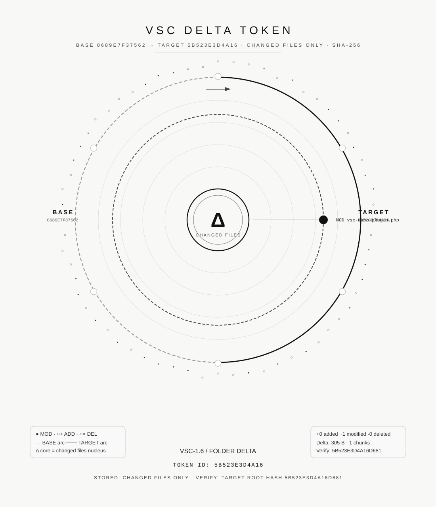

VSC Core
Verifiable Structural Compression
Store a full state once. Store only ordered, verifiable deltas after that. Reconstruct the latest state and verify it by root hash.
GitHub Repository →Research prototype / MVP proof-of-concept · Generated 2026-06-16
Proof Flow
WordPress-style folder: one base, two ordered deltas, one verified latest state.
WordPress-style MVP Result
Full-copy backup strategy vs VSC base + ordered deltas.
Visual Token Grammar
Each VSC token is represented as a human-readable SVG seal. The seal encodes token type, state relationship, and verification identity.




Verification
All cryptographic verification runs against SHA-256 root hashes stored in the token JSON. No external service required.
- PASS Chain restore — latest state reconstructed from base + 2 deltas
- PASS Chain verify — reconstructed root hash matches expected latest root hash
- PASS verify-all — FAIL: 0 across all registered tokens
- SHA-256 Latest state verified by root hash
Reproduce the Demo
From a clean clone of the repository:
npm install npm run vsc -- demo:run
Or run individual steps:
npm run vsc -- demo # create test fixture npm run vsc -- backup test-wp # base snapshot npm run vsc -- delta <base> test-wp # delta npm run vsc -- chain <base> <d1> <d2> npm run vsc -- restore <chain> npm run vsc -- verify <chain> <restored-folder> npm run vsc -- verify-all
Links
- → GitHub Repository — DigiEmu/vsc-core
- → Token Gallery (local)
- → Chain Storage Report (markdown)
- → Documentation
Status: research prototype / MVP proof-of-concept. Not production-ready.